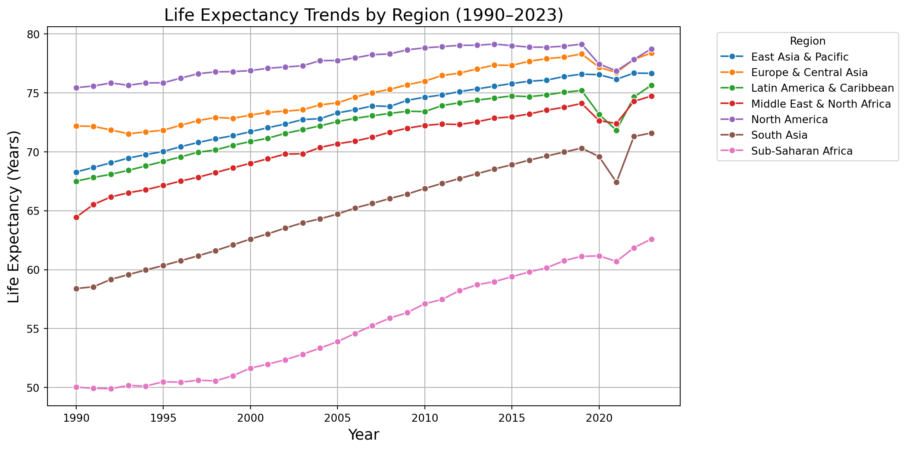
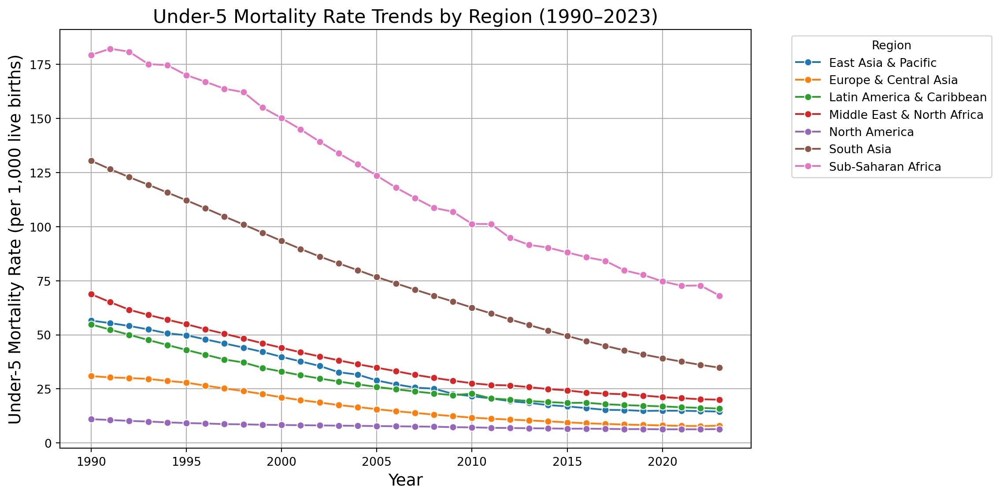
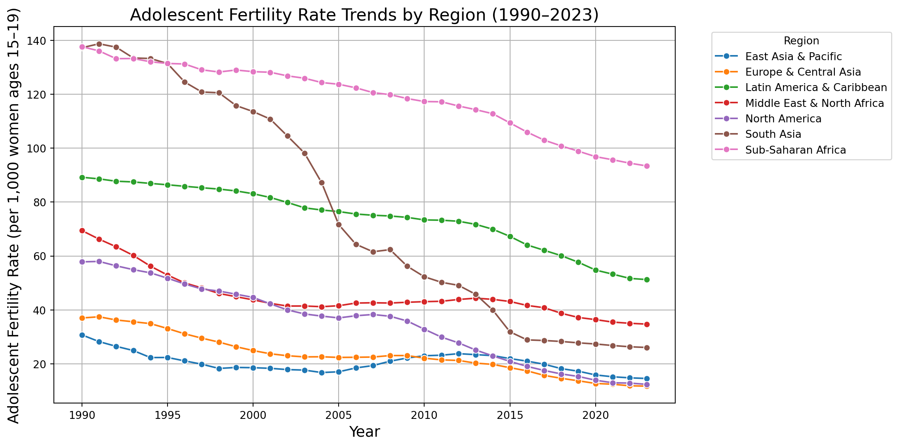
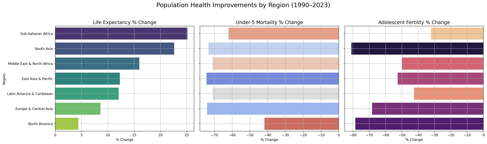
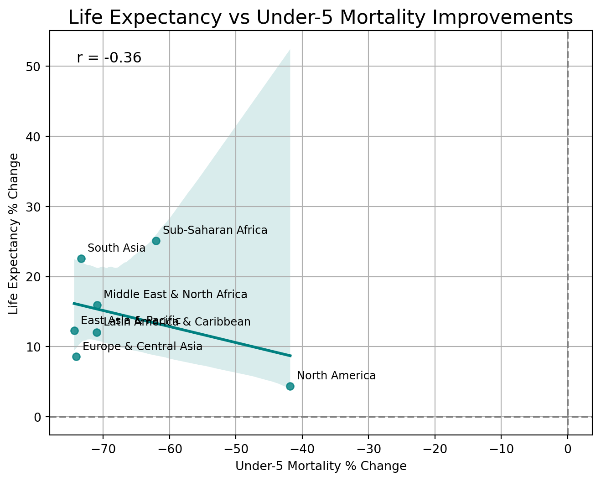
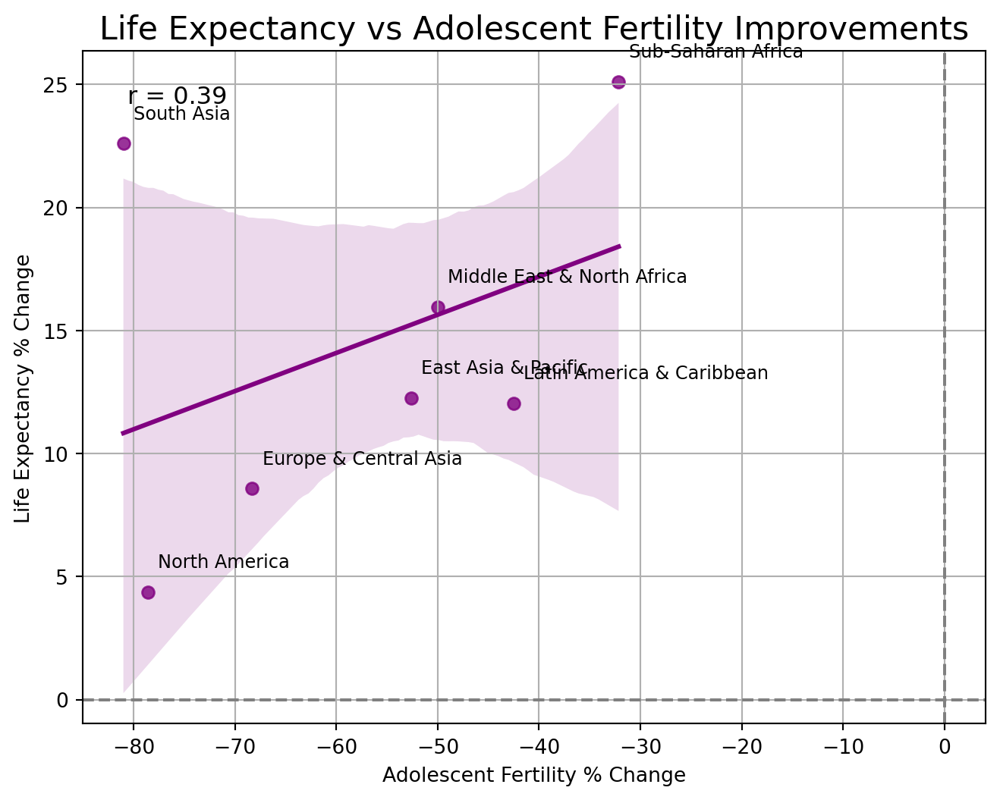

Over the recent decades, population health has increased significantly across the globe as a result of improvements in healthcare, education, and socio-economic status. However, the pace and drivers of these improvements vary widely across regions. The project aims to compare worldwide trends in life expectancy, under-5 mortality, and adolescent fertility from 1990 to 2023 in order to determine how various regions have undergone population health enhancement.
Our research addresses two main questions:
Which regions have experienced the fastest improvements in population health, and what role did adolescent fertility and child mortality reductions play?
Are reductions in under-5 mortality more strongly associated with improvements in life expectancy than reductions in adolescent fertility?
To address these questions, we analyzed publicly available World Bank data to follow trends over time in key and selected other health indicators. We compared seven key world regions, examining absolute trends as well as interrelationships among various indicators. Additionally, we performed correlation and scatterplot analyses to evaluate the relative strength of associations between child mortality reductions, adolescent fertility declines, and gains in life expectancy.
Through this analysis, we aim to highlight not just where health outcomes have improved the most, but also to better understand the underlying dynamics contributing to these improvements.
Data Description
Introduction of the Dataset and Context
Our analysis focuses on global population health trends using three key indicators sourced from the World Bank World Development Indicators (WDI) database:
Life Expectancy at Birth (SP.DYN.LE00.IN)
Under-5 Mortality Rate (SH.DYN.MORT)
Adolescent Fertility Rate (SP.ADO.TFRT)
The dataset provides annual values for over 200 countries and regions across multiple decades, offering a comprehensive view of global health improvements.
We narrowed our analysis to the period from 1990 to 2023 to ensure consistency and reliability across countries. Many regions had incomplete or less standardized reporting prior to 1990, and focusing on this period allows us to capture recent and more comparable trends in global health progress.
Data Merging Steps
Initial Pull: We pulled the three indicators separately through the wbdata API, obtaining raw data tables for life expectancy, under-5 mortality, and adolescent fertility.
Reshape and Combine: Each table was reshaped to have a consistent structure (country, date, value) and renamed appropriately.
Merge Process: Using SQL, the three tables were merged into a single master dataset by matching on country and date, ensuring that only rows with complete data for all three indicators were included.
Storage: The merged dataset was stored in an SQLite in-memory database for easier querying and preprocessing.
Data Cleaning
Missing Values: Rows with missing values in any of the three indicators were removed.
Date Filtering: Only observations between 1990 and 2023 were kept.
Aggregation: Countries were aggregated into seven major global regions for analysis consistency.
Transformation: Data was reshaped to create new variables such as percentage changes between 1990 and 2023.
The following Python code was used for merging:
import wbdataimport pandas as pdimport sqlite3# 1. Set indicatorsindicators = {'SP.DYN.LE00.IN': 'life_expectancy','SH.DYN.MORT': 'under5_mortality_rate','SP.ADO.TFRT': 'adolescent_fertility_rate'}# 2. Fetch data (NO date filter)df = wbdata.get_dataframe(indicators)# 3. Reset indexdf = df.reset_index()# 4. Drop rows with missing valuesdf = df.dropna()# 5. Load into SQLite in-memory databaseconn = sqlite3.connect(':memory:')df.to_sql('population_data', conn, index=False, if_exists='replace')# 6. Create cleaned tableconn.execute("""CREATE TABLE cleaned_population_data ASSELECT country, date, life_expectancy, under5_mortality_rate, adolescent_fertility_rateFROM population_dataWHERE life_expectancy IS NOT NULL AND under5_mortality_rate IS NOT NULL AND adolescent_fertility_rate IS NOT NULL""")conn.commit()# 7. Descriptive statsstats_query ="""SELECT AVG(life_expectancy) AS avg_life_expectancy, MIN(life_expectancy) AS min_life_expectancy, MAX(life_expectancy) AS max_life_expectancy, AVG(under5_mortality_rate) AS avg_under5_mortality, MIN(under5_mortality_rate) AS min_under5_mortality, MAX(under5_mortality_rate) AS max_under5_mortality, AVG(adolescent_fertility_rate) AS avg_adolescent_fertility, MIN(adolescent_fertility_rate) AS min_adolescent_fertility, MAX(adolescent_fertility_rate) AS max_adolescent_fertilityFROM cleaned_population_data"""stats_result = pd.read_sql_query(stats_query, conn)print(stats_result)# 8. Group by countrygrouped_query ="""SELECT country, AVG(life_expectancy) AS avg_life_expectancy, AVG(under5_mortality_rate) AS avg_under5_mortality_rate, AVG(adolescent_fertility_rate) AS avg_adolescent_fertility_rateFROM cleaned_population_dataGROUP BY countryORDER BY avg_life_expectancy DESC"""grouped_result = pd.read_sql_query(grouped_query, conn)print(grouped_result.head())# Query the cleaned table into a DataFramecleaned_df = pd.read_sql_query("SELECT * FROM cleaned_population_data", conn)# Now cleaned_df is a normal DataFrame you can manipulateprint(cleaned_df.head())
avg_life_expectancy min_life_expectancy max_life_expectancy \
0 65.252508 10.989 86.372
avg_under5_mortality min_under5_mortality max_under5_mortality \
0 71.114946 1.4 767.4
avg_adolescent_fertility min_adolescent_fertility \
0 72.515224 0.512
max_adolescent_fertility
0 229.604
country avg_life_expectancy avg_under5_mortality_rate \
0 Monaco 82.924282 5.166667
1 Andorra 82.030308 7.423077
2 San Marino 81.448641 6.107692
3 Euro area 79.545286 5.312769
4 Post-demographic dividend 78.542056 6.698336
avg_adolescent_fertility_rate
0 14.336128
1 8.424590
2 3.891615
3 10.007935
4 20.049102
country date life_expectancy under5_mortality_rate \
0 Africa Eastern and Southern 2023 65.146291 53.806252
1 Africa Eastern and Southern 2022 64.487020 56.644907
2 Africa Eastern and Southern 2021 62.979999 57.140506
3 Africa Eastern and Southern 2020 63.766484 58.911653
4 Africa Eastern and Southern 2019 63.857261 60.658078
adolescent_fertility_rate
0 92.305668
1 93.379389
2 94.659513
3 95.741339
4 97.189787
Summary of Key Variables
Variable
Description
country
Name of the country or region
date
Year of observation
life_expectancy
Life expectancy at birth (in years)
under5_mortality_rate
Mortality rate under age 5 (per 1,000 live births)
adolescent_fertility_rate
Births per 1,000 women aged 15–19
life_expectancy_pct_change
Percent change in life expectancy between 1990 and 2023
under5_mortality_pct_change
Percent change in under-5 mortality between 1990 and 2023
adolescent_fertility_pct_change
Percent change in adolescent fertility rate between 1990 and 2023
Data Analysis
Initial Preparation and Region Selection
We began by refining the cleaned dataset:
The date column was converted to an integer type to ensure proper time-based filtering and plotting.
We filtered the data to focus on seven major global regions:
East Asia & Pacific, Europe & Central Asia, Latin America & Caribbean, Middle East & North Africa, North America, South Asia, and Sub-Saharan Africa.
This selection was made to focus on broad global patterns while maintaining sufficient regional diversity.
country
date
life_expectancy
under5_mortality_rate
adolescent_fertility_rate
204
East Asia & Pacific
2023
76.659477
14.5
14.565804
205
East Asia & Pacific
2022
76.676784
14.7
14.800343
206
East Asia & Pacific
2021
76.153009
14.9
15.197225
207
East Asia & Pacific
2020
76.543438
14.9
15.878941
208
East Asia & Pacific
2019
76.586262
14.8
17.261394
The filtered dataset provides yearly health indicators for each region between 1990 and 2023, focusing on life expectancy, under-5 mortality rate, and adolescent fertility rate.
Life Expectancy Trends Over Time (1990–2023)
We visualized life expectancy trends across the seven major regions from 1990 to 2023. This helps identify the pace of health improvements over the past three decades.

The resulting plot shows several key trends:
Steady Gains Across All Regions: Life expectancy rose consistently in all regions, though at varying rates.
Highest and Lowest: North America consistently maintained the highest life expectancy, while Sub-Saharan Africa started the period with the lowest but showed steady gains.
Impact of External Events: Around 2020, there was a visible dip across several regions, likely due to the global COVID-19 pandemic’s impact on mortality.
Narrowing Gaps: Regions such as East Asia & Pacific and Europe & Central Asia made notable progress, narrowing the life expectancy gap with North America by the end of the period.
These trends provide important context for understanding population health improvements over time before diving into the detailed percent changes and associations with mortality and fertility rates.
Under-5 Mortality Rate Trends Over Time (1990–2023)
Next, we examined how under-5 mortality rates evolved across the same seven global regions from 1990 to 2023.

The resulting figure reveals several important patterns:
Universal Decline: Under-5 mortality rates dropped sharply in all regions between 1990 and 2023, reflecting broad improvements in child healthcare access and quality.
Sub-Saharan Africa’s Progress: Despite starting with the highest child mortality rates, Sub-Saharan Africa achieved significant reductions over the period.
South Asia’s Achievements: South Asia also demonstrated major progress, cutting under-5 mortality considerably.
Consistently Low Rates: North America and Europe & Central Asia maintained the lowest mortality rates throughout the period, highlighting robust healthcare infrastructures.
Global Health Improvement: Overall, this figure underscores the global success in reducing childhood mortality rates over the past thirty years.
Adolescent Fertility Rate Trends Over Time (1990–2023)
Finally, we analyzed how adolescent fertility rates evolved across regions between 1990 and 2023.

The figure reveals:
Widespread Decline: Adolescent fertility rates dropped sharply across all regions over the three decades.
South Asia’s Success: South Asia, which initially had one of the highest adolescent fertility rates, demonstrated one of the steepest declines.
Sub-Saharan Africa’s Progress: Sub-Saharan Africa also made progress but continues to exhibit relatively high adolescent fertility compared to other regions.
Lower Rates in Developed Regions: North America and Europe & Central Asia consistently maintained the lowest adolescent fertility rates, suggesting better access to education, reproductive health services, and empowerment initiatives for young women.
Global Trend: Overall, the trends reflect major global improvements in healthcare, education, and socio-economic opportunities for adolescent women.
Merging 1990 and 2023 Data for Regional Comparison
To assess long-term health improvements, we filtered the dataset to only include the years 1990 and 2023, and merged the two datasets by region for side-by-side comparison.
<IPython.core.display.Latex object>
Explanation:
The filtering isolates records from 1990 and 2023.
We performed a merge on the country (region) column to align the two years side-by-side for each region.
This structure allows us to easily compute percentage changes in life expectancy, under-5 mortality, and adolescent fertility for each region.
The merged dataset gives us the foundational structure needed to calculate improvements over time and to compare health trends between regions.
Calculating Percentage Changes (1990–2023)
To quantify improvements across health indicators, we calculated the percentage change for each region between 1990 and 2023 for:
Life expectancy
Under-5 mortality rate
Adolescent fertility rate
<IPython.core.display.Latex object>
Key Insights:
Sub-Saharan Africa and South Asia recorded the fastest improvements in life expectancy, with gains of 25% and 23%, respectively.
North America showed the smallest life expectancy increase at just 4.4%, consistent with its already high baseline in 1990.
Under-5 mortality saw major declines across all regions, particularly in South Asia, East Asia & Pacific, and Europe & Central Asia, each with over 70% reductions.
In adolescent fertility, South Asia had the most dramatic improvement with an 81% decline, while North America and Europe & Central Asia also showed strong declines of around 78% and 68%, respectively.
This table offers a clear, side-by-side view of where health outcomes have improved most significantly over the past three decades.
Population Health Improvements by Region (1990–2023)
We calculated the percentage change in life expectancy, under-5 mortality, and adolescent fertility for each region between 1990 and 2023. The figure below shows a side-by-side comparison of improvements across these indicators.

Interpretation:
From 1990 to 2023, South Asia and Sub-Saharan Africa achieved the largest percentage increases in life expectancy and substantial reductions in under-5 mortality and adolescent fertility rates.
South Asia stands out for achieving the greatest overall gains across all three indicators, highlighting widespread improvements in health systems, education, and reproductive health.
Sub-Saharan Africa also showed meaningful improvements, although adolescent fertility remains relatively higher compared to other regions.
North America and Europe & Central Asia experienced smaller relative gains in life expectancy, largely because they already had high health outcomes by 1990.
Notably, reductions in under-5 mortality were consistently strong across nearly all regions, showing the global success of child health interventions.
This visualization highlights how regions that initially faced the most severe health challenges made the greatest strides over the past three decades.
Correlation Between Indicators
To better understand the relationships between improvements in life expectancy and the declines in under-5 mortality and adolescent fertility, we calculated Pearson correlation coefficients across regions.
Correlation between Life Expectancy Change and Under-5 Mortality Change: -0.364
Correlation between Life Expectancy Change and Adolescent Fertility Change: 0.388
Interpretation:
The correlation between life expectancy change and under-5 mortality rate change was moderately negative (r = -0.364).
This suggests that regions with greater reductions in child mortality tended to experience larger gains in life expectancy. However, the relationship is not extremely strong, implying that while child survival improvements contribute meaningfully to longer life spans, other factors (such as adult health and socioeconomic conditions) also play a role.
The correlation between life expectancy change and adolescent fertility rate change was moderately positive (r = 0.388).
This indicates that regions with sharper declines in adolescent fertility tended to achieve larger gains in life expectancy. While the association is noticeable, it is moderate, suggesting that improvements in adolescent reproductive health likely support but do not solely drive broader health improvements.
Deeper Scatterplot Analysis
To further visualize and support our correlation findings, we produced detailed scatterplots:
Life Expectancy vs Under-5 Mortality Improvements
Life Expectancy vs Adolescent Fertility Improvements


Life Expectancy vs. Under-5 Mortality Improvements:
The scatter plot shows a moderate negative relationship between reductions in under-5 mortality and improvements in life expectancy (r = -0.36).
Regions like South Asia and Sub-Saharan Africa that achieved larger declines in child mortality generally saw greater gains in life expectancy.
North America appears as an outlier with relatively high life expectancy but smaller reductions in under-5 mortality, reflecting its already strong baseline by 1990.
Life Expectancy vs. Adolescent Fertility Improvements:
The scatter plot shows a moderate positive relationship between reductions in adolescent fertility and life expectancy gains (r = 0.39).
Regions with sharper declines in teenage birth rates, such as South Asia and Sub-Saharan Africa, tended to experience larger life expectancy improvements.
The upward trend suggests that improvements in reproductive health outcomes contribute meaningfully to broader population health progress.
Key Takeaways from the Scatterplots:
Although both child mortality and adolescent fertility reductions are associated with life expectancy gains, the relationships are moderate rather than extremely strong.
This highlights that multiple social, economic, and healthcare factors simultaneously influence health improvements across regions.
Regions starting from worse initial conditions (lower life expectancy, higher child mortality) generally made the most rapid relative progress over the past three decades.
Discussion
Summary of Main Findings
Our analysis highlights striking patterns in global health progress between 1990 and 2023. Across all three indicators—life expectancy, under-5 mortality, and adolescent fertility—substantial improvements were observed, but the pace and magnitude of change varied meaningfully by region.
Sub-Saharan Africa and South Asia exhibited the most remarkable health gains overall. Sub-Saharan Africa achieved the highest percentage increase in life expectancy (25.1%) despite starting from the lowest baseline, coupled with a notable 62% reduction in under-5 mortality and a 32% reduction in adolescent fertility rates. South Asia followed closely, recording a 22.6% rise in life expectancy, a 73% drop in under-5 mortality, and an outstanding 81% decline in adolescent fertility. These results reflect the region’s substantial efforts in expanding healthcare access, improving maternal and child health, and investing in education for young women.
North America and Europe & Central Asia maintained relatively high baseline health levels throughout the period. Although they showed smaller relative improvements in life expectancy (only 4–9% increases), they consistently had the lowest under-5 mortality and adolescent fertility rates both in 1990 and 2023. North America, in particular, experienced a significant 78% drop in adolescent fertility, underscoring continued progress in reproductive health services despite a modest increase in life expectancy.
Latin America & the Caribbean and the Middle East & North Africa demonstrated intermediate patterns, achieving around 12–16% increases in life expectancy while simultaneously making major strides in reducing child and adolescent health risks.
Our comparative barplots vividly illustrate that regions with lower initial health outcomes in 1990 made the largest relative improvements by 2023, suggesting a global convergence trend in population health. However, the data also shows that some disparities persist, especially regarding adolescent fertility and child mortality in Sub-Saharan Africa.
Discussion of Limitations
Temporal Aggregation and Measurement Gaps: While we tracked health changes over a 33-year period (1990–2023), year-to-year variations and shorter-term health shocks are smoothed over in our analysis. Important events—such as political instability, disease outbreaks, or healthcare reforms—may have caused temporary deviations that are not fully captured when looking only at start and end points.
Regional Aggregation Effects: Aggregating diverse countries into broader regions may obscure important within-region differences. For instance, life expectancy trends in South Asia may differ significantly between countries like India and Bangladesh.
Correlation Limitations: Correlation does not imply causality. Although strong associations between indicators were found, we cannot definitively conclude that reductions in under-5 mortality or adolescent fertility caused increases in life expectancy.
External Shocks: Events like the COVID-19 pandemic likely disrupted some health trends, particularly post-2020, but our model does not account for such shocks explicitly.
Further Reading
To support our analysis and ensure reproducibility, we used the following resources: